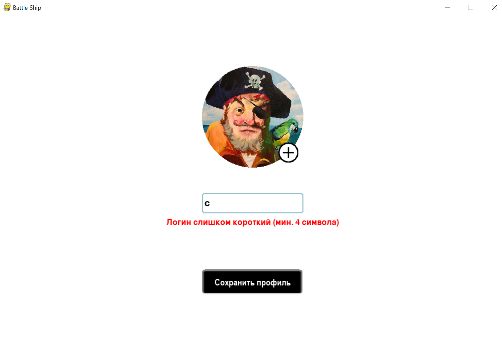
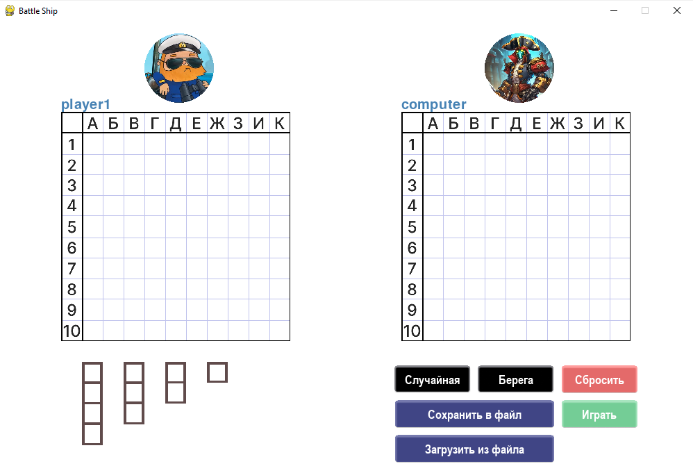
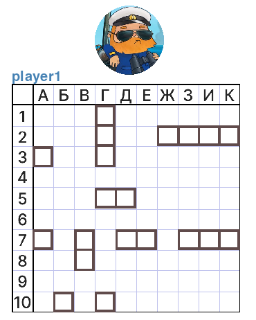

Работа с системой
Создание профиля
Для начала игры необходимо создать профиль. Пока профиль не создан, кнопка «Начать игру» будет недоступна. (см. рисунок ниже).
Для создания профиля необходимо выполнить следующие шаги:
1. Выбрать изображение для аватара из предложенных десяти предустановленных вариантов.
Если пользователь не выбрал аватар и нажал кнопку «Выбрать», то внизу окна будет располагаться соответствующее сообщение (см. рисунок ниже).
2. Придумать логин, который должен содержать от 4 до 10 символов.
Если пользователь при вводе логина не соблюдает допустимую длину, то под полем ввода логина будет располагаться соответствующее сообщение (см. рисунок ниже).
Оба шага являются обязательными для завершения создания профиля. Если хотя бы один из шагов не выполнен, система не позволит начать игру и внизу окна создания профиля будет располагаться соответствующее сообщение (см. рисунок ниже).
После нажатия на кнопку «Сохранить профиль» осуществляется проверка введённых данных, при успешном завершении которой, пользователь перенаправляется на начальное окно приложения и может нажать на кнопку «Начать игру»
Настройка параметров игры
Выбор уровня сложности компьютерного противника
После создания профиля пользователю необходимо выбрать уровень сложности для игры с компьютерным противником. Для этого нужно нажать соответствующую кнопку, которая отображает доступные варианты сложности. (см. рисунок ниже).
Выбор способа расстановки кораблей
Ручная расстановка
Для того чтобы расставить корабли вручную пользователю необходимо выбрать соотвествующий шаблон корабля под своим полем и перенести удерживая левой кнопкой мыши на поле. (см. рисунок ниже).
Всего доступно 4 шаблона кораблей:
- четырёхпалубный корабль – в количестве 1 ;
- трёхпалубных корабль – в количестве 2;
- двухпалубных корабль– в количестве 3;
- однопалубных корабль – в количестве 4;
На поле предусмотрено изменение ориентации корабля при ручной расстановке кораблей на поле. Это осуществимо благодаря двум сценариям, при которых можно изменить ориентацию.
1 Вариант когда корабль ещё не находится на поле, тогда необходимо выполнить следующие действия:
- 1. Выберите корабль, щелкнув по нему левой кнопкой мыши.
- 2. Перетащите выбранный корабль на игровое поле.
- 3. После размещения корабля на поле наведите курсор на него и щелкните правой кнопкой мыши, чтобы изменить его ориентацию по часовой стрелке.
Обратите внимание, что между кораблями должна быть как минимум одна клетка, и они не могут стоять друг на друге. Если корабль не помещается в выбранную позицию, система не позволит разместить его в этом месте.
2 Вариант когда корабль уже размещён на поле пользователя, тогда необходимо выполнить следующие действия:
- 1. Наведите курсор на корабль, который уже размещён на поле.
- 2. Щелкните правой кнопкой мыши, чтобы изменить ориентацию корабля по часовой стрелке.
- 3. После размещения корабля на поле наведите курсор на него и щелкните правой кнопкой мыши, чтобы изменить его ориентацию по часовой стрелке.
Обратите внимание, что между кораблями должна быть как минимум одна клетка, и они не могут стоять друг на друге. Если корабль не помещается в выбранную позицию, система не позволит разместить его в этом месте.
Случайная расстановка
Для того чтобы расставить корабли случайным образом пользователю необходимо выбрать соответствующую кнопку. Кнопка «Случайная» отвечает за данную функцию. (см. рисунок ниже).

После нажатия на кнопку «Случайная» пользователю предлагается поле с кораблями, расставленными случайным образом. Кроме того, пользователь всегда может скорректировать предложенный вариант на свое усмотрение. (см. рисунок ниже).
Расстановка «Берега»
Для того, чтобы расставить корабли определенным образом необходимо выбрать кнопку «Берега». «Берега» – это особый способ расположения кораблей, стратегия которого заключается в расположении кораблей по краям карты. (см. рисунок ниже).

После нажатия на кнопку «Берега» пользователю предлагается поле с кораблями, расставленными определенным образом. Кроме того, пользователь всегда может скорректировать предложенный вариант на свое усмотрение. (см. рисунок ниже).

Сохранить расстановку в файл
Для того, чтобы сохранить идеальную расстановку для последующей игры, можно использовать кнопку «Сохранить в файл». Данная кнопка открывает файловую систему, которая позволяет записать расстановку кораблей пользователя в файл и выбрать папку, в которой он будет храниться. (см. рисунок ниже).
Загрузить расстановку из файла
Для того, чтобы воспользоваться расстановками, которые пользователь сохранил на свой компьютер нужно нажать на кнопку «Загрузить из файла». После чего откроется файловая система компьютера, которая позволит найти нужный файл. (см. рисунок ниже).
Сбросить расстановку
Для того, чтобы убрать все корабли с поля можно использовать кнопку «Сбросить». Данная кнопка позволяет очистить поле одним нажатием. (см. рисунок ниже).